Concepto
El Art Nouveau (en francés, "Arte Nuevo") fue un movimiento artístico y arquitectónico internacional que surgió a finales del siglo XIX (aproximadamente en 1890) y se desarrolló hasta el inicio de la Primera Guerra Mundial (1914). Fue una reacción contra el academicismo, la industrialización y la reproducción de estilos históricos (como el Neoclasicismo o el Neogótico) que dominaban el siglo XIX. Su objetivo principal era crear un arte nuevo, joven, libre y moderno que representara su época.
Características
- Inspiración en la Naturaleza (Bioformismo): Es la característica fundamental. No se copia la naturaleza de forma realista, sino que se estiliza. Se inspiran en formas orgánicas como flores, plantas, insectos, figuras femeninas y de forma estructural comúnmente hacen que su forma asemeje tallos que se convierten en barandillas, hojas en relieves y flores en vidrieras.
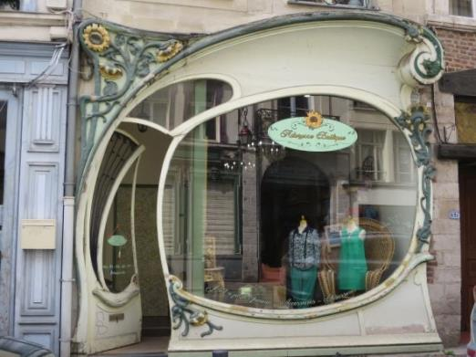
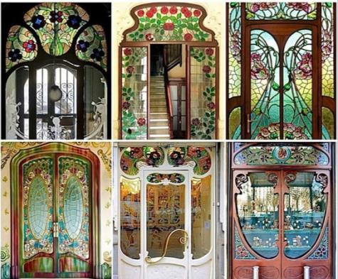
Albert Pépe
- Línea "Látigo" y Asimetría: La línea es la protagonista absoluta. Se caracteriza por la "línea látigo", una curva larga, serpenteante, elegante y con mucha energía, que recuerda a un látigo en movimiento. Estas líneas crean composiciones dinámicas y deliberadamente asimétricas.
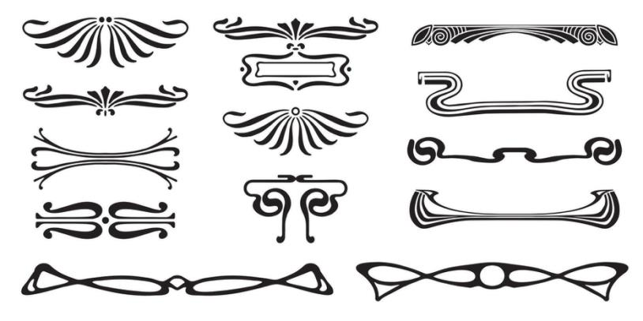
- Gesamtkunstwerk (Obra de Arte Total): El arquitecto diseña no solo el edificio, sino todos sus componentes: muebles, lámparas, herrajes, vidrieras, papeles pintados y accesorios. El objetivo es crear un espacio interior y exterior unificado y coherente.
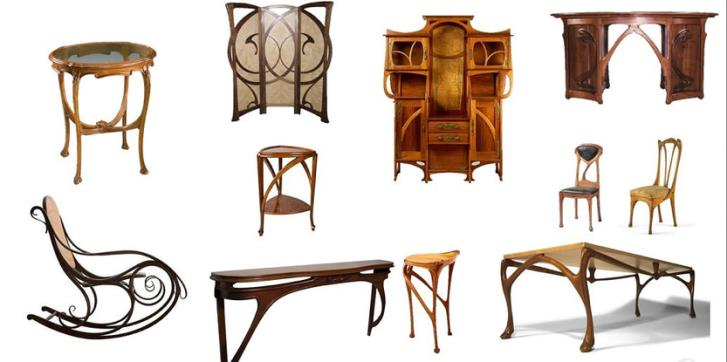
- Modernidad e Innovación: Fue un estilo conscientemente moderno que rechazaba los estilos históricos (neoclásico, neogótico). Abrazó los nuevos materiales de la era industrial, pero dándoles un tratamiento artístico y orgánico.
Elementos formales
- Plantas y Fachadas Fluidas: Las fachadas dejan de ser planas y simétricas. Adquieren movimiento, con curvas, balcones ondulados y volúmenes fluidos
- Vanos Irregulares: Puertas y ventanas con formas asimétricas, de "ojo de cerradura", o rematadas con arcos en forma de herradura o que imitan capullos.
- Grandes Ventanales: Se buscan interiores luminosos, por lo que son comunes los ventanales grandes, a menudo unidos por vidrieras artísticas.
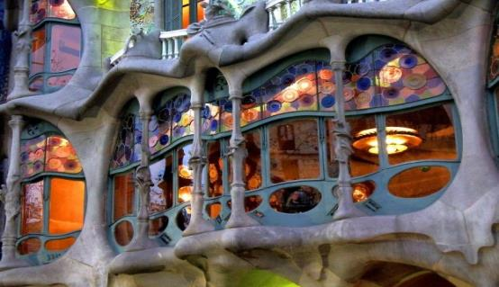
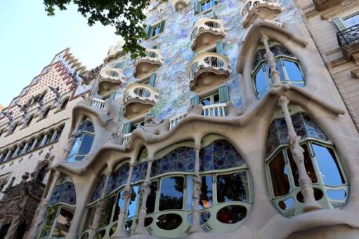
Casa Batlló, Barcelona 1904
Antoni Gaudí
- Materiales: Hierro Forjado, Vidrio y Vitrales, Hormigón y Piedra, Cerámica y Mosaico.
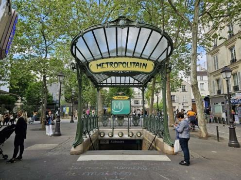
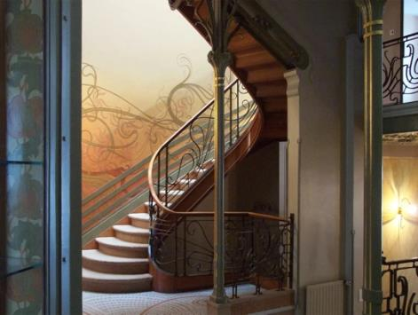
Bruselas 1893
Héctor Guimard
Víctor Horta
Obras Importantes
Casa Tassel (1893-1894) - Bruselas, Bélgica
Arquitecto: Victor Horta
Considerada por muchos historiadores la primera obra maestra del Art Nouveau arquitectónico, la Casa Tassel es el manifiesto inicial del estilo.
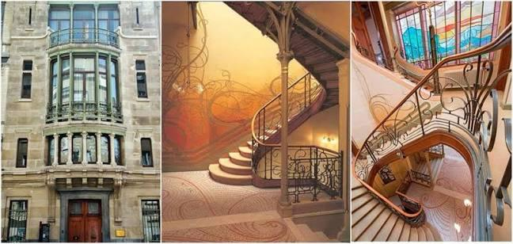
Secession Building (1897-1898) - Viena, Austria
Arquitecto: Joseph Maria Olbrich
Este edificio es el manifiesto arquitectónico de la Secesión Vienesa, la versión austriaca del Art Nouveau que tendía hacia la geometría y la abstracción. Diseñado como sala de exposiciones para el grupo de artistas vanguardistas (entre ellos Gustav Klimt), su exterior es un contrapunto radical a la exuberancia floral belga.
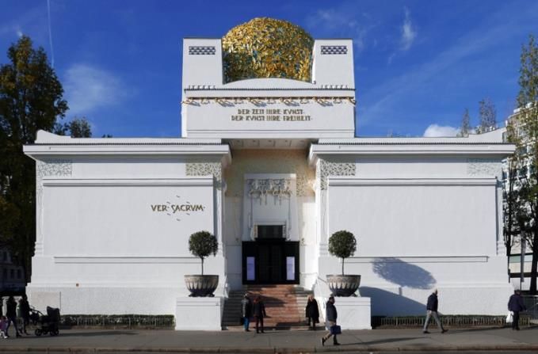
Casa Batlló (1904-1906) - Barcelona, España
Arquitecto: Antoni Gaudí
Su descripción se centra en su diseño innovador y biomórfico, que se aleja de las líneas rectas y se inspira en la naturaleza. Destacan la fachada con balcones en forma de máscara y el tejado que simula el lomo de un dragón.
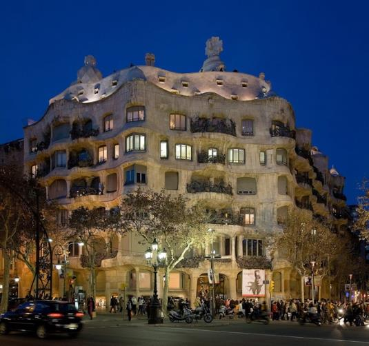
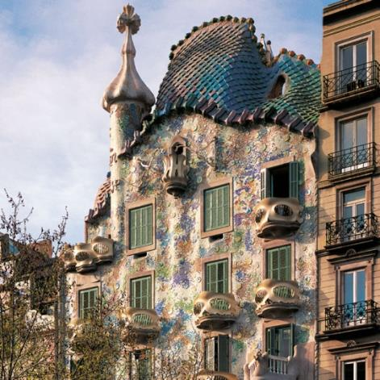
Casa Milà "La Pedrera" (1906-1912) - Barcelona, España
Arquitecto: Antoni Gaudí
Su característica principal es su fachada ondulante de piedra, que le dio el apodo de "cantera". La estructura se basa en dos bloques de viviendas con patios interiores y una azotea espectacular con chimeneas escultóricas.
Arquitectos importantes
Victor Horta
En Bélgica, es el padre arquitectónico del estilo. Creó el lenguaje esencial con sus famosas "líneas látigo" en hierro forjado y espacios fluyentes alrededor de lucernarios, como en la pionera Casa Tassel (1893). En Francia, Hector Guimard popularizó el movimiento con sus icónicas entradas de metro en París, llevando la estética orgánica al mobiliario urbano y la vivienda burguesa.
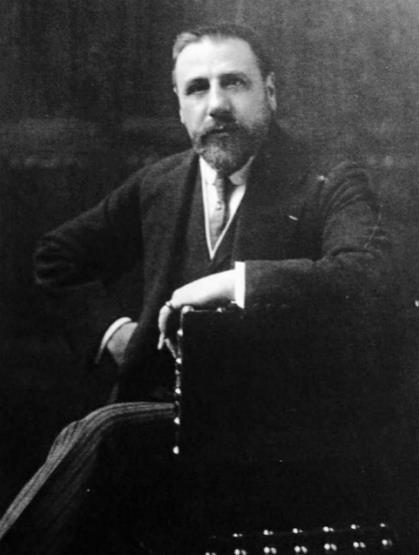
Antoni Gaudí
En Barcelona, trascendió el Art Nouveau para crear un universo propio dentro del Modernismo. Su arquitectura, como la Casa Batlló o la Sagrada Familia, se basó en la naturaleza como principio estructural, usando la línea curva, el color del trencadís y formas imposibles que convierten el edificio en una escultura habitable.
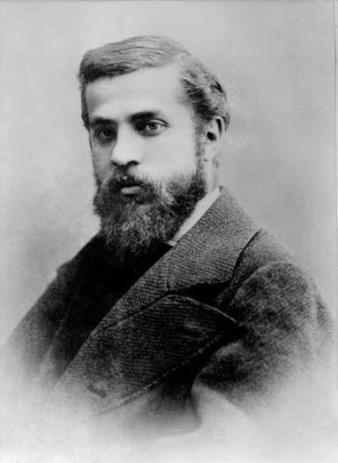
Otto Wagner
En Viena, Otto Wagner lideró la Secesión hacia una elegancia moderna y funcional. Defendió que "lo que no es práctico no puede ser bello", usando materiales modernos como aluminio y mármol con remaches visibles, como en el Edificio de la Caja Postal de Ahorros. Su alumno Joseph Maria Olbrich plasmó este ideal en el Edificio de la Secesión, con su célebre cúpula dorada de hojas de laurel sobre un volumen cúbico puro.
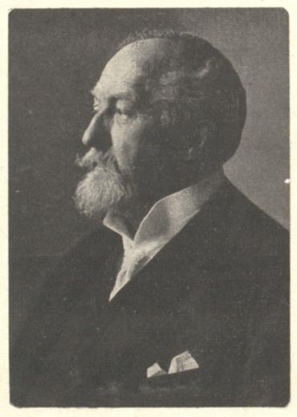
Josef Hoffmann
En Viena fue cofundador de la Wiener Werkstätte, evolucionó hacia una abstracción geométrica extrema. Su obra cumbre, el Palais Stoclet en Bruselas, es un cubo revestido de mármol con franjas de cobre donde el ornamento es puramente lineal; una Gesamtkunstwerk total que marca el puente hacia el Art Decó y el racionalismo del siglo XX.
Opinión personal
El Art Nouveau representa uno de los momentos más poéticos, valientes y humanamente ambiciosos de la creación artística occidental. Es un estilo que fascina por su doble condición de grito de libertad y último suspiro de un mundo artesanal, en un momento dominado por el historicismo y la producción industrial, buscaron en el lugar más opuesto a la fábrica: en la naturaleza.
Su vida fue breve, precisamente porque su premisa era casi imposible de sostener. La idea de la Gesamtkunstwerk (la obra de arte total), donde el arquitecto controlaba y diseñaba cada detalle, desde el pomo de la puerta hasta la lámpara, era económicamente inviable y socialmente elitista. Su exuberancia, su detalle minucioso y su curva eran incompatibles con las urgencias prácticas, la necesidad de viviendas masivas y la estética de la eficiencia.
El Art Nouveau es aprender que el diseño es un acto holístico: unifica arte y vida, naturaleza y tecnología, estructura y emoción. Es un recordatorio eterno de que la modernidad puede ser orgánica, que la función puede ser poética, y que la belleza, en su expresión más libre, es un derecho esencial de toda época.